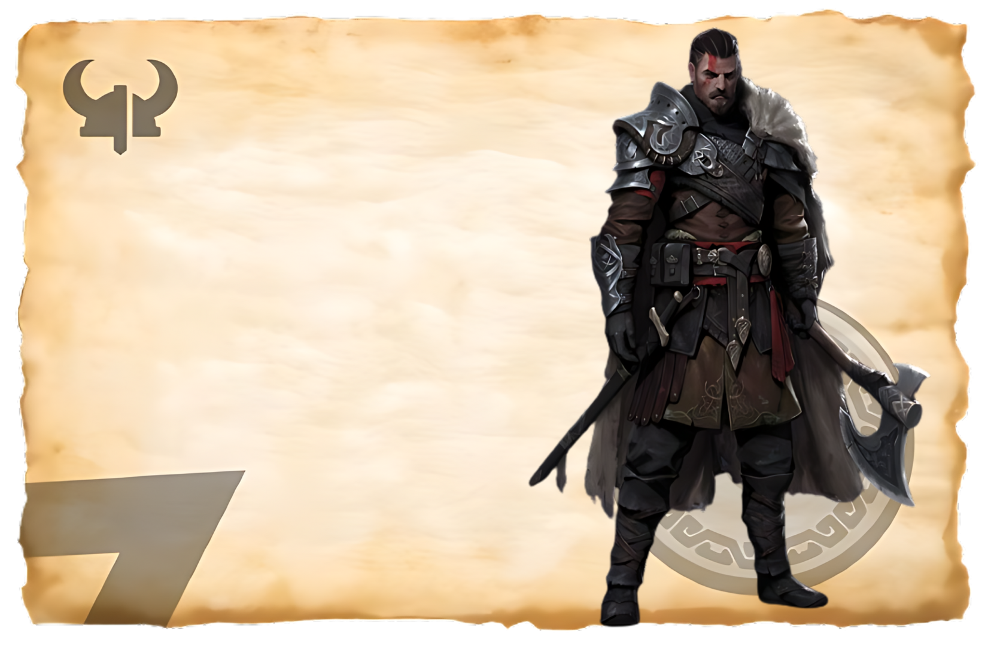

The ArcherLore
Lore of Vindskot the Archer In the northern lands, where the winds howl across the frozen plains and the
skies are often painted with the vibrant colors of the aurora borealis, there lived an archer of
legendary skill known as
Vindskot. His name, which meant "wind shot," was a testament to his unparalleled precision and speed
with a bow. Vindskot was said to have been born during a fierce winter storm, as if the elements
themselves heralded his arrival. His mother, a skilled huntress, taught him the ways of the bow from a
young age. By the
time he reached adulthood, Vindskot had honed his skills to such a degree that he could strike a target
with unerring accuracy even in the most challenging conditions.
One of the most famous tales of Vindskot's prowess occurred during a great battle against a rival clan.
The enemy had brought forth a monstrous creature from the depths of the dark forests—a giant wolf,
fierce and nearly invincible. Vindskot's clan struggled to keep the beast at bay, and hope began to
fade. But Vindskot stood firm, his bow in hand, and waited for the right moment. As the wolf charged
towards
him, he released an arrow that seemed to catch the wind itself. The arrow flew straight and true,
piercing the wolf's heart and bringing it down with a single shot. The enemy clan, witnessing their
champion's fall, fled in fear, and Vindskot's clan emerged victorious.
Drekaris
The AssasinLore
In the shadowed corners of the Viking world, where whispers travel faster than the winds, there existed
a group of assassins known as Drekaris. They were feared and respected for their lethal precision and
mysterious presence. Named after the dragon ("dreki") for their fierce, silent strikes and the dark
power they wielded, the Drekaris were not bound by honor or loyalty but by the thrill of the hunt and
the pursuit of shadows. The origins of Drekaris were shrouded in mystery, much like their own movements.
Some said they emerged
from a hidden sanctuary deep within the mountains, where they trained in secrecy for years. Others
believed they were forged from the darkest elements of nature itself, bound by an ancient pact to serve
those who could pay their high price.
Drekaris were masters of disguise, blending into their surroundings effortlessly. They wore dark, hooded
cloaks that concealed their identities and allowed them to move silently through the night. Their
weapons of choice were slender, razor-sharp blades that could deliver a swift and deadly strike without
a sound. Poison was another favored tool, often derived from rare and deadly plants that only the
Drekaris knew how to harvest and utilize. Their reputation as assassins spread far and wide, and their
services were sought after by powerful
chieftains and kings who wished to eliminate their enemies without a trace. Drekaris operated with
ruthless efficiency, leaving behind no witnesses and no evidence of their presence. The mere mention of
their name struck fear into the hearts of their targets.

Bjornulf
The BarbarianLore
Bjolnurf the Barbarian was a legendary figure whose name echoed across the rugged northern lands. Known
for his unmatched strength and ferocity in battle, Bjolnurf was a force to be reckoned with, feared by
enemies and admired by allies. His origins were as wild and untamed as the lands he roamed. Born to a
clan known for their strength and resilience, Bjolnurf's early life was marked by hardship and
struggle. He grew up in a harsh, unforgiving environment, where only the strong survived. His father, a
fierce warrior, trained him in the art of combat from a young age. By the time he reached adulthood,
Bjolnurf had already earned a reputation as a formidable warrior.
Bjolnurf's physical presence was imposing. He towered over most men, with a muscular frame that seemed
to have been carved from stone. His long, wild hair and beard were as fiery red as the flames of battle,
and his piercing green eyes glinted with determination and courage. His armor was made from the hides of
the mighty beasts he had slain, and his weapon of choice was a massive, double-bladed axe that he
wielded with deadly precision. Bjolnurf's most famous exploits took place during a series of epic
battles against rival clans and
invading forces. His bravery on the battlefield was unmatched, and his war cries were said to inspire
both fear and awe. He fought with a ferocity that seemed to come from another world, cutting through
enemy lines with ease and leading his clan to victory time and again.
Stormbane
The WarriorLore
Stormbane was a legendary Viking warrior whose name became synonymous with strength, resilience, and the
ability to conquer the most formidable challenges. Known for his fierce courage and mastery of combat,
Stormbane was a force to be reckoned with on the battlefield. His story is one of triumph over
adversity, marked by his ability to withstand the most intense tempests of life. Born during a thunderstorm that shook the northern lands, Stormbane was seen as a child of the storm,
destined for greatness. His father, a respected chieftain, recognized his son's potential and trained
him in the ways of the warrior from a young age. Stormbane's childhood was filled with lessons of
strength, honor, and strategy.
As he grew, Stormbane's reputation as a warrior spread throughout the lands. He was known for his
prowess with a sword and shield, able to hold his ground against any opponent. His fighting style was as
unpredictable as a storm, blending powerful strikes with agile movements that kept his enemies guessing.
His armor, adorned with symbols of thunder and lightning, struck fear into the hearts of his foes. Stormbane's most famous exploits took place during a great war between rival clans. He led his warriors
into battle, facing overwhelming odds with unwavering determination. It was said that the storms
themselves seemed to heed his call, raging fiercely whenever he took to the battlefield. His presence
inspired his comrades, giving them the strength to overcome any challenge.